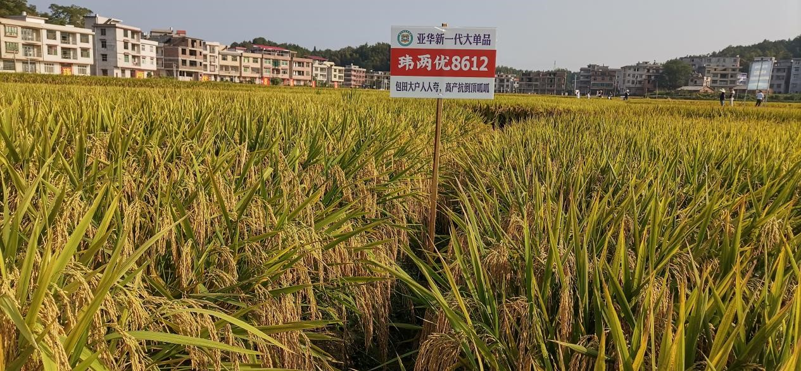
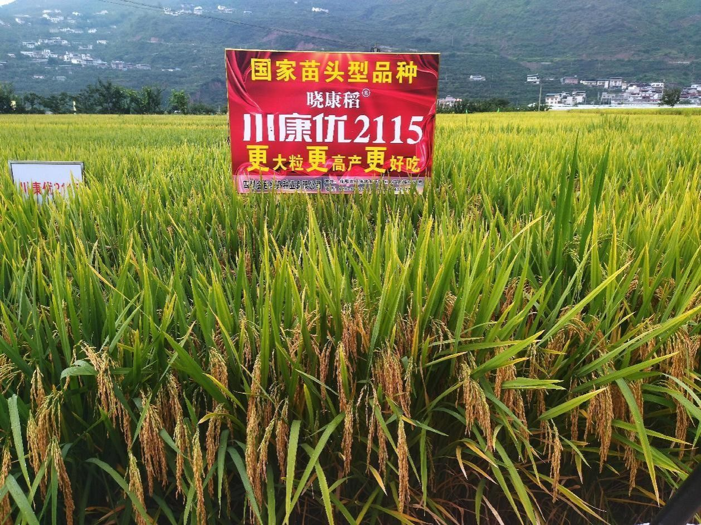
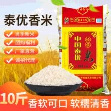
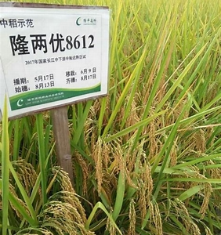

我国水稻种植区域分布很广，主要分布在
湖南
江西
广东
广西
浙江
安徽
等等等地。
1、金香玉1号:金香玉1号选育单位为江苏金土地种业有限公司，高产、优质、抗病，适应性强，是2024年新确认的超级稻品种之一。
2、徽两优丝苗:徽两优丝苗是籼型两系杂交水稻品种，适合闲田和麦茬田种植，抗倒伏性强，在高产田块中的产量可以达到900公斤以上。
3、申优28:申优28选育单位为上海市农业科学院，高产、优质，具有较好的抗病性和适应性。申优28是杂交水稻品种，产量和品质表现优秀。
4、龙粳39:龙粳39优质、高产、抗病、抗倒伏的粳稻品种，米质达国家二级食用粳稻品种标准，在适应区一般公顷产量8000公斤以上。
5、春优83:春优83选育单位为中国水稻研究所，高产、优质，适应性广。春优83是粳型三系杂交水稻品种，作为超级稻品种之一，在产量和适应性方面表现出色。
6、华中优9326:华中优9326选育单位为浙江省农科院，青秆黄熟、结实率高、抗性强。华中优9326是优质籼粳交品种，籼型三系杂交水稻品种，高产、稳产、优质。
7、爽两优138:爽两优138选育单位为湖南杂交水稻研究中心，高产、优质。爽两优138是籼型三系杂交水稻品种，2024年度被确认为超级稻的品种之一。
8、华浙优261:华浙优261选育单位为中国水稻研究所，是籼型三系杂交水稻品种，在产量和品质方面均有不俗表现，在我国南方地区受到很多种植户的青睐，产量较高。
9、泰乡优雅占:泰乡优雅占选育单位为江西普胜农业开发有限责任公司，具有高产、优质的特点，适应性较广。泰乡优雅占是籼型三系杂交水稻品种，2024年度超级稻品种之一。
10、川康优2115:川康优2115是籼型三系杂交水稻品种，测得平均稻谷产量每亩982.4公斤，达到超级稻验收标准。川康优2115抗性好、适应性广、高产稳产、外观品质优、食味品质佳。
2、徽两优丝苗:徽两优丝苗是籼型两系杂交水稻品种，适合闲田和麦茬田种植，抗倒伏性强，在高产田块中的产量可以达到900公斤以上。
3、申优28:申优28选育单位为上海市农业科学院，高产、优质，具有较好的抗病性和适应性。申优28是杂交水稻品种，产量和品质表现优秀。
4、龙粳39:龙粳39优质、高产、抗病、抗倒伏的粳稻品种，米质达国家二级食用粳稻品种标准，在适应区一般公顷产量8000公斤以上。
5、春优83:春优83选育单位为中国水稻研究所，高产、优质，适应性广。春优83是粳型三系杂交水稻品种，作为超级稻品种之一，在产量和适应性方面表现出色。
6、华中优9326:华中优9326选育单位为浙江省农科院，青秆黄熟、结实率高、抗性强。华中优9326是优质籼粳交品种，籼型三系杂交水稻品种，高产、稳产、优质。
7、爽两优138:爽两优138选育单位为湖南杂交水稻研究中心，高产、优质。爽两优138是籼型三系杂交水稻品种，2024年度被确认为超级稻的品种之一。
8、华浙优261:华浙优261选育单位为中国水稻研究所，是籼型三系杂交水稻品种，在产量和品质方面均有不俗表现，在我国南方地区受到很多种植户的青睐，产量较高。
9、泰乡优雅占:泰乡优雅占选育单位为江西普胜农业开发有限责任公司，具有高产、优质的特点，适应性较广。泰乡优雅占是籼型三系杂交水稻品种，2024年度超级稻品种之一。
10、川康优2115:川康优2115是籼型三系杂交水稻品种，测得平均稻谷产量每亩982.4公斤，达到超级稻验收标准。川康优2115抗性好、适应性广、高产稳产、外观品质优、食味品质佳。
NO.1:晶两优华占 以其卓越的产量表现和广泛的适应性，稳居杂交水稻推广面积榜首位。该品种由优质不育系晶4155S与恢复系华占配组而成，具有高产、优质、抗倒、抗病等特点。在全国多个稻区种植，均表现出良好的生长性能和产量潜力，深受农民朋友的喜爱。据统计，晶两优华占在全国的推广面积已超过464万亩，成为杂交水稻中的佼佼者。
NO.2:龙粳31 是北方寒地稻区的重要品种，以其耐寒、高产、优质等特点著称。该品种在黑龙江、吉林等省广泛种植，成为当地农民的首选品种。龙粳31不仅产量高，而且米质优良，口感好，深受市场欢迎。2024年，龙粳31的推广面积达到了1134万亩，稳居全国杂交水稻推广面积第二位。
NO.3:晶两优534 该品种同样由优质不育系晶4155S与恢复系配组而成，具有高产、优质、抗病等特点。在全国多个稻区种植，均表现出良好的生长性能和产量潜力。晶两优534的推广面积已超过371万亩，成为杂交水稻中的重要力量。
NO.4:黄华占 是南方稻区的重要品种，以其高产、优质、抗病等特点而广受欢迎。该品种在广东、广西、福建等省广泛种植，成为当地农民的重要经济来源。黄华占的米质优良，口感好，深受市场欢迎。2024年，黄华占的推广面积达到了582万亩，位居全国杂交水稻推广面积第四位。
NO.5:野香优莉丝 是一种具有浓郁香味的杂交水稻品种。该品种不仅产量高，而且米质优良，口感独特，深受消费者喜爱。在全国多个稻区种植，均表现出良好的生长性能和产量潜力。野香优莉丝的推广面积已超过305万亩，成为杂交水稻中的新贵。
NO.6:南粳9108 是江苏省农科院选育的优质粳稻品种。该品种具有高产、优质、抗病等特点，在江苏、安徽等省广泛种植。南粳9108的米质优良，口感细腻，深受市场欢迎。2024年，南粳9108的推广面积达到了533万亩，位居全国杂交水稻推广面积第六位。
NO.7:绥粳27 是黑龙江省农科院选育的优质粳稻品种。该品种具有耐寒、高产、优质等特点，在黑龙江、吉林等省广泛种植。绥粳27的米质优良，口感好，深受市场欢迎。2024年，绥粳27的推广面积达到了492万亩，成为北方稻区的重要品种。
NO.8:隆两优534 是湖南省农科院选育的优质杂交水稻品种。该品种具有高产、优质、抗病等特点，在全国多个稻区广泛种植。隆两优534的米质优良，口感好，深受市场欢迎。2024年，隆两优534的推广面积超过了277万亩，成为杂交水稻中的重要品种。
NO.9:中嘉早17 是浙江省农科院选育的优质早籼稻品种。该品种具有早熟、高产、优质等特点，在浙江、福建等省广泛种植。中嘉早17的米质优良，口感细腻，深受市场欢迎。2024年，中嘉早17的推广面积达到了276万亩，成为南方早稻区的重要品种。
NO.10:中科发5号 是中国科学院遗传与发育生物学研究所选育的优质杂交水稻品种。该品种具有高产、优质、抗病等特点，在全国多个稻区广泛种植。中科发5号的米质优良，口感好，深受市场欢迎。2024年，中科发5号的推广面积超过了241万亩，成为杂交水稻中的新秀。
NO.2:龙粳31 是北方寒地稻区的重要品种，以其耐寒、高产、优质等特点著称。该品种在黑龙江、吉林等省广泛种植，成为当地农民的首选品种。龙粳31不仅产量高，而且米质优良，口感好，深受市场欢迎。2024年，龙粳31的推广面积达到了1134万亩，稳居全国杂交水稻推广面积第二位。
NO.3:晶两优534 该品种同样由优质不育系晶4155S与恢复系配组而成，具有高产、优质、抗病等特点。在全国多个稻区种植，均表现出良好的生长性能和产量潜力。晶两优534的推广面积已超过371万亩，成为杂交水稻中的重要力量。
NO.4:黄华占 是南方稻区的重要品种，以其高产、优质、抗病等特点而广受欢迎。该品种在广东、广西、福建等省广泛种植，成为当地农民的重要经济来源。黄华占的米质优良，口感好，深受市场欢迎。2024年，黄华占的推广面积达到了582万亩，位居全国杂交水稻推广面积第四位。
NO.5:野香优莉丝 是一种具有浓郁香味的杂交水稻品种。该品种不仅产量高，而且米质优良，口感独特，深受消费者喜爱。在全国多个稻区种植，均表现出良好的生长性能和产量潜力。野香优莉丝的推广面积已超过305万亩，成为杂交水稻中的新贵。
NO.6:南粳9108 是江苏省农科院选育的优质粳稻品种。该品种具有高产、优质、抗病等特点，在江苏、安徽等省广泛种植。南粳9108的米质优良，口感细腻，深受市场欢迎。2024年，南粳9108的推广面积达到了533万亩，位居全国杂交水稻推广面积第六位。
NO.7:绥粳27 是黑龙江省农科院选育的优质粳稻品种。该品种具有耐寒、高产、优质等特点，在黑龙江、吉林等省广泛种植。绥粳27的米质优良，口感好，深受市场欢迎。2024年，绥粳27的推广面积达到了492万亩，成为北方稻区的重要品种。
NO.8:隆两优534 是湖南省农科院选育的优质杂交水稻品种。该品种具有高产、优质、抗病等特点，在全国多个稻区广泛种植。隆两优534的米质优良，口感好，深受市场欢迎。2024年，隆两优534的推广面积超过了277万亩，成为杂交水稻中的重要品种。
NO.9:中嘉早17 是浙江省农科院选育的优质早籼稻品种。该品种具有早熟、高产、优质等特点，在浙江、福建等省广泛种植。中嘉早17的米质优良，口感细腻，深受市场欢迎。2024年，中嘉早17的推广面积达到了276万亩，成为南方早稻区的重要品种。
NO.10:中科发5号 是中国科学院遗传与发育生物学研究所选育的优质杂交水稻品种。该品种具有高产、优质、抗病等特点，在全国多个稻区广泛种植。中科发5号的米质优良，口感好，深受市场欢迎。2024年，中科发5号的推广面积超过了241万亩，成为杂交水稻中的新秀。
这些品种的成功推广，离不开农业科技工作者的辛勤付出和不断创新。他们通过基因编辑、分子标记辅助育种等现代生物技术手段，不断挖掘和利用水稻的遗传潜力，培育出了一批又一批高产、优质、抗病的杂交水稻新品种。这些新品种的推广和应用，不仅提高了水稻的产量和品质，也促进了农业生产的可持续发展。
同时，政府的高度重视和政策支持也是杂交水稻事业得以快速发展的关键因素。国家加大了对农业科技的投入力度，加强了对杂交水稻新品种的选育和推广工作。各级农业部门积极组织科技人员深入田间地头，开展技术培训和技术指导，帮助农民朋友掌握先进的种植技术和管理方法。这些措施的实施，为杂交水稻的快速发展提供了有力保障。
展望未来，随着全球人口的不断增长和粮食需求的不断增加，杂交水稻事业将继续迎来新的发展机遇和挑战。我们将继续加强科技创新和人才培养力度，不断提高杂交水稻的产量和品质水平；同时加强国际合作与交流，推动杂交水稻技术走向世界舞台中央；最后加强政策引导和支持力度，为杂交水稻事业的持续健康发展提供有力保障。相信在不久的将来，杂交水稻将成为保障全球粮食安全的重要力量。
同时，政府的高度重视和政策支持也是杂交水稻事业得以快速发展的关键因素。国家加大了对农业科技的投入力度，加强了对杂交水稻新品种的选育和推广工作。各级农业部门积极组织科技人员深入田间地头，开展技术培训和技术指导，帮助农民朋友掌握先进的种植技术和管理方法。这些措施的实施，为杂交水稻的快速发展提供了有力保障。
展望未来，随着全球人口的不断增长和粮食需求的不断增加，杂交水稻事业将继续迎来新的发展机遇和挑战。我们将继续加强科技创新和人才培养力度，不断提高杂交水稻的产量和品质水平；同时加强国际合作与交流，推动杂交水稻技术走向世界舞台中央；最后加强政策引导和支持力度，为杂交水稻事业的持续健康发展提供有力保障。相信在不久的将来，杂交水稻将成为保障全球粮食安全的重要力量。
苗头型品种
- 
- 
- 
- 